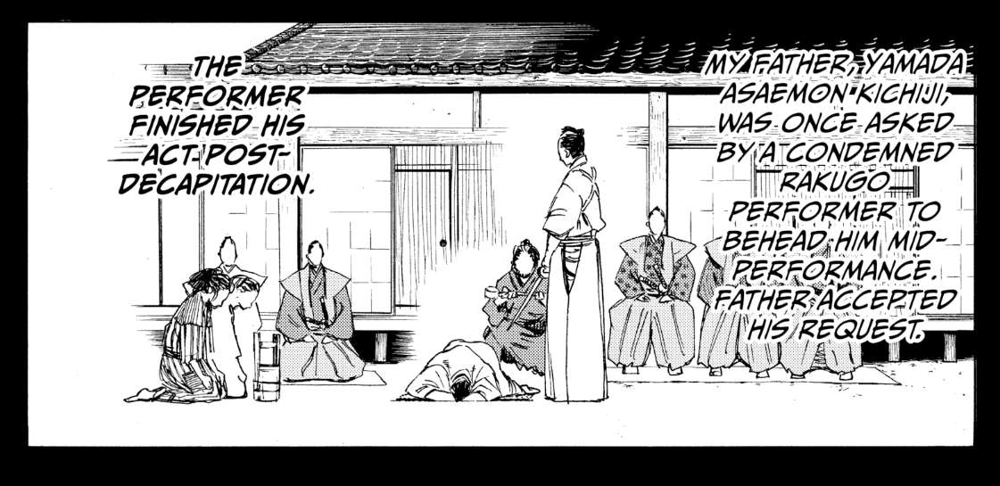
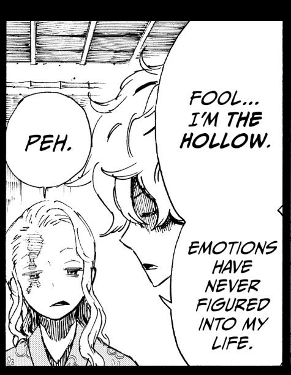
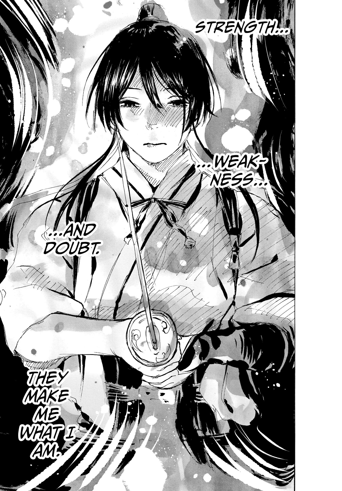
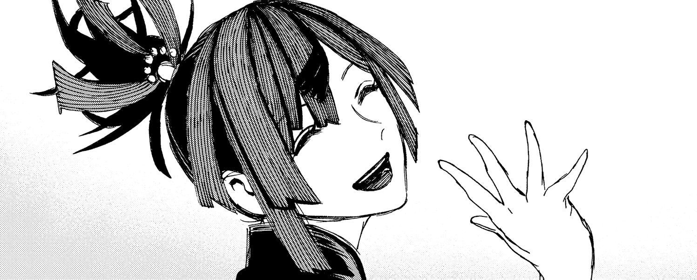

Jigokuraku
Aagaman Luitel | words: 1252 | 6 minutes |Introduction
Jigokuraku written by Yuji Kaku is a supernatural manga. This manga takes best of both Japanese era as it takes place in edo period and Chinese religion called Taoism. Our main protagonist is a cold hearted ninja named Gabimaru “Gabimaru the hollow”.
Title
Lets talk about the title first. Jigokuraku literally means “Jigoku”->Hell & “Gokuraku”->Heaven/paradise translated in english its Hell’s Paradise. Considering the story takes place where there exists immortal gods this title is simple and straightforward.
Setting
The story takes place on edo period somewhere in Japan. The depiction of that era is pretty well made. With addition to the harsh ruling in edo period it also shows us how the concept of life was in the edo period. It was normal for people to commit seppuku and have family of neck choppers. There is a manga Samurai Executioner whose story revolves around a guy “Yamada Asaemon” but weridly enough Gintama also has a girl from Asaemon family and this manga has also neck chopper family of Asaemon. I don’t know if Asaemon were real family or just reference from that manga but it sure seems interesting. 
This is one of my absolute best panels from the manga. Its subtle and has no effect on the plot whatsoever but this panel will keep us in check with the edo period and types of people that will get introduced in future. It also sets the expectations about the character.
Story
Gabimaru was not immortal, he had no meaning for his life yet he could not be executed. He would not care less if he was killed yet he was resisting subconsciously. Unknowing to Gabimaru, he loved his wife. Love was changing him with introducing emotions to the hollow man. His hineous act of murder was sentenced to death from Sagiri Asaemon but getting the seed of immortality would pardon his sentence and return to his wife. Thus the journey continues on island where that supposedly seed of immortality was present. He was to take Sagiri, his executioner. This same task were given to other criminals as well.

The island looked like paradise yet no man returned after entering the island. Those who returned were dead bodies, they were converted to “Tao” which seemed to be a source of immortality.
According to Taosim the body and the mind are formed by Tao. This piece of text is very vital for the story. The manga actually uses this concept heavily as all immortality is the Tao remaking their bodies. The manga also says that meditation and certain breathing techniques allow to achieve immortality called the way of tan. This might be far fetched but Taoism do actually believe in spiritual immortality mostly referring to Xian. Xian being refered as Sennin in the Manga are the antagonist of the story with Tensen being the highest ranking Sennin. They are the seemingly “immortals” in the manga. They lived for centuries and can use Tao to regenerate themself.
Jigokuraku has very natural and well designed characters. Viz let the author draw whatever the heck he wanted and the author did a very good job of potraying the characters.
Gabimaru
Gabimaru sentenced to death by Asaemon Sagiri is a ruthless but skilled ninja. He took this challenge just to see his wife, Yui. As the story progresses Gabimaru was changing not only from the harsh journey but also from Sagiri. We will come to that later. From the experiences he learned what he really wanted, it was to be free from all these killings and live a normal life with his wife. This resolve made him softer and more humane to the point he hesitated to kill Tensen. Once Yuzuriha made a concept of how Gabimaru’s wife might not be real since she is daughter of Ninja leader who might be manipulating Gabimaru. But this does not let his resolve die. He does not let that concept weaken him as he belived in his wife. Later in the story we find our that Gabimaru is the title given to the most ruthless ninja. Passing the title includes killing the precedence Gabimaru.
Asaemon Sagiri
Another character I absolutely love. She comes from Asaemon family. Unlike Gabimaru she had no resolve. She was normal but strict girl who wanted to improve in her occupation of behading. She had weakness due to which she lacked confidence. I think this really shows how we humans are and how we relate to Sagiri. That being said Gabimaru always thought her of being strong, stronger than himself despite the advantage in physical bodies. Upon the adventure she slowly realizes what a person can do and you have to live with it. In final volume she says she was attached Gabimaru meaning she no longer saw Gabimaru as criminal but as a friend.

The Asaemon family
Each Asaemon had different personality. Some were too righteous, some were too laid back and some did not want to be Asaemon. I don’t want to talk about all the Asaemons but there are some that you will love and relate to.
Shugen is too righteous, he is extreme. Rumors had he not only decapitated the crimimal but his whole generation from the old to an infant baby. He supported Sagiri and all the other Asaemon and his extreme resolve made him too powerful. In ending volume we can see that Shugen accepts new Sagiri as she and Gabimaru fought together.
“Such unpleasantness could not be avoided. Your execution alone would not
stop your wicked ways from being carried on by your relations. The blame in
such cases lies not only with the corrupt soul of a single man but also with
the environment that produced him.”
Taken from https://jigokuraku.fandom.com/wiki/Yamada_Asaemon_Shugen
Another Asaemon I really like is Jikka. He is useless. His personality is uncanningly funny. When he realizes that fighting immortals and winning is impossible feat, he just drinks some more booze and cheers to the death of humanity. He is not evil by any means, in fact he is one of the reason why Gabimaru and other criminals were not executed. Tl;dr he fooled the shogun.
Criminals
The criminals were thrown into an impossible feat of defeating immortals. Some died before returning to the island some were killed by Asaemons.
One criminal I really like is Aza Chobei. He is the bandit leader, with his small brother who infiltrated the Asaemon family his plan was to live free. Finding the immortality and giving it to shogun? No. If he found that he would just gulp all of it himself. Despite being ruthless criminal he loved his brother. He partnered with Tensen if his brother was not harmed but instead of Sennin betraying him, he betrayed Sennin. Thats how ruthless this guy is! His ability to adapt to situations made him stronger and live how he see fit.
Another one is Yuzuriha. She is a shinobi. She was selfish. As a shinobi her fundamentals of life was to live without any danger… despite being a shinobi. As manga progresses she becomes very fond of Sagiri and decides to go on a journey with her. I find her really cute and her seemingly innocent personality is really enjoyable to read. Later in chapter she nearly sacrifies herself to help Gabimaru.
Ending
The ending is really well executed. Its so wholesome that you forget that they once fought immortals. Yui was real after all, she was waiting for Gabimaru to return. Sagiri and Yuzuriha went on a journey and part of it was to stumble Gabimaru and his wife.
